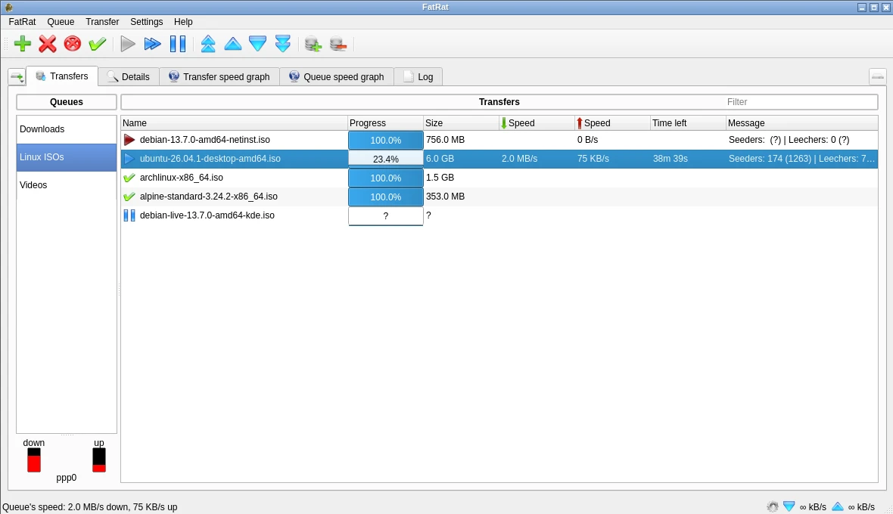
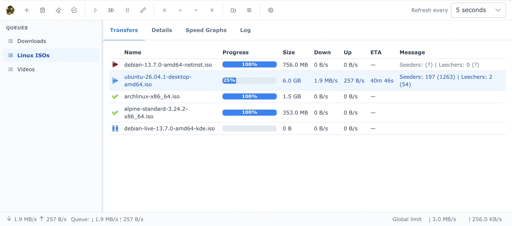
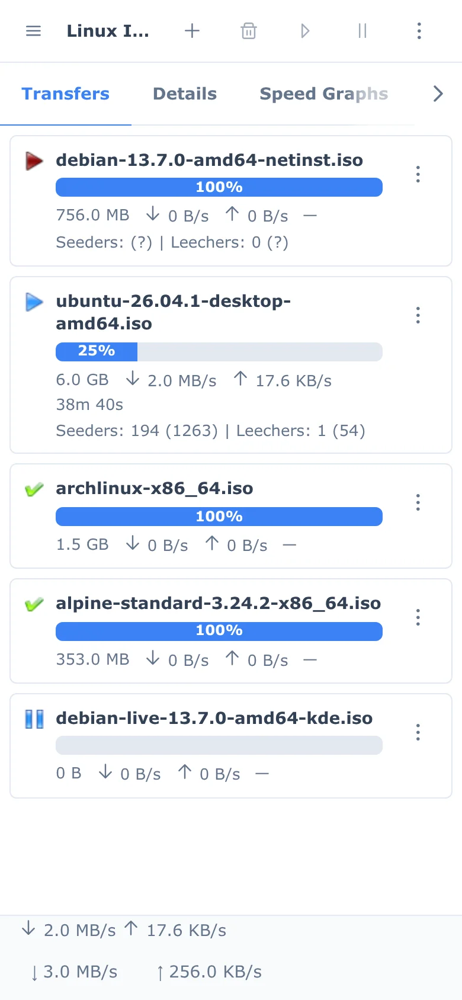
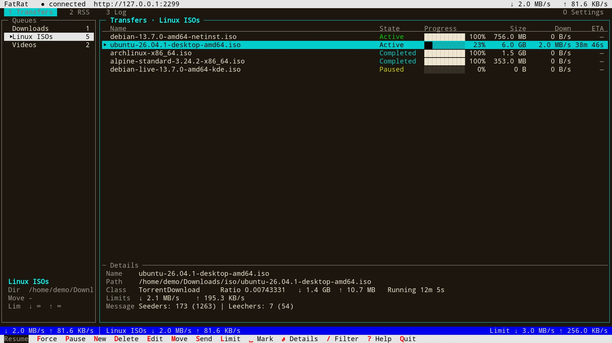
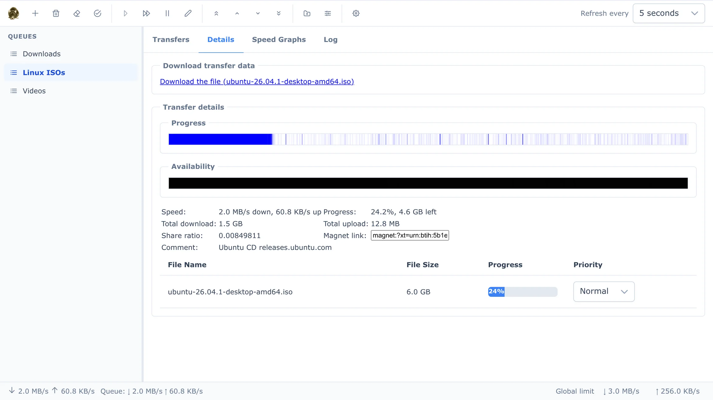
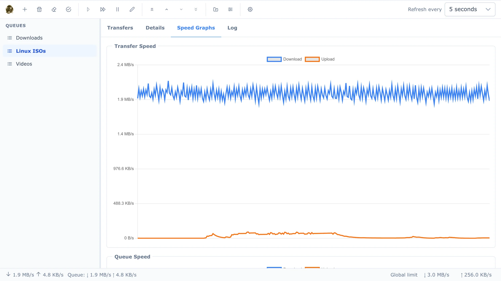

FatRat downloads over HTTP(S), FTP(S) and BitTorrent, keeps your transfers in queues, follows RSS feeds and runs on a schedule. You can drive it from the desktop app, a web browser, a terminal or a script, all at the same time.




fatrat-tui works over SSH and in tmux. It's keyboard driven, the mouse works too, and the bottom line always shows which keys apply.

Under development since 2006, and rebuilt in 2026 on Qt 6 with a new web interface, a terminal UI and a REST API.
HTTP, HTTPS, FTP and FTPS downloads over several connections per file, with mirror lists, Metalink and resume.
.torrent files and magnet links through libtorrent-rasterbar, with DHT, per-file priorities and creating your own torrents.
Each queue has its own directory, a "move when finished" target, speed limits and a cap on how many transfers run at once.
Regular-expression rules download new feed items. Episode tracking (season/episode or by date) fetches each episode only once.
Start or stop queues and change their speed limits at set times. Limits apply per transfer or per queue.
Copy a link and FatRat offers to download it. There's also a drop box and an "open with FatRat" command line.
FTP uploads, plus upload plugins for file hosting sites, run in the same queues as your downloads.
Translated into Czech, German, Spanish, French, Polish, Russian, Ukrainian, Chinese and more.
One FatRat, several ways in. Run the desktop app on your laptop, or the headless daemon on a server or NAS and connect to it from anywhere.
The full Qt interface with a tray icon and every setting in one place.
fatrat
fatrat --hidden # start in the tray
fatrat-nogui runs as a daemon and serves the web interface itself, with optional HTTPS.
fatrat-nogui
# then open http://server:2233/
Finds a running FatRat by itself, or connects to a remote one by URL.
fatrat-tui fatrat-tui --url https://nas:2233
A JSON API (with an OpenAPI description) for your own scripts and tools, and D-Bus on the desktop.
curl -u x:PASS http://host:2233/api/v1/queues
Some sites put a login, a countdown or a captcha in front of the file. A short Python plugin gets past it and hands FatRat the real link, which then downloads like any other transfer, with segments, speed limits and resume.
fatrat-conf.# ~/.local/share/fatrat/plugins/example/__init__.py
import fatrat
@fatrat.download_plugin(name="Example.com",
url_pattern=r"https?://example\.com/f/\w+")
class Example(fatrat.DownloadPlugin):
async def process_link(self, url):
page = await self.fetch(url)
await self.wait(30)
self.start_download(
page.search(r'href="([^"]+\.bin)"'))
Packages for Ubuntu, a Docker image you build yourself, or a CMake build anywhere Qt 6.5 runs.
Signed apt repository for Ubuntu 26.10 and 26.04 LTS (amd64).
sudo install -d /etc/apt/keyrings
sudo curl -fsSLo /etc/apt/keyrings/fatrat.gpg https://fatrat.dolezel.info/fatrat.gpg
echo "deb [signed-by=/etc/apt/keyrings/fatrat.gpg] https://fatrat.dolezel.info $(. /etc/os-release; echo $VERSION_CODENAME) main" \
| sudo tee /etc/apt/sources.list.d/fatrat.list
sudo apt update
sudo apt install fatrat # desktop version
sudo apt install fatrat-nogui # headless version + terminal UI
| fatrat | Qt desktop application |
|---|---|
| fatrat-nogui | fatrat-nogui (controlled through the web interface) and fatrat-tui |
| fatrat-common | Files shared by both (installed automatically) |
A headless FatRat with HTTP(S)/FTP(S), BitTorrent, the web interface and the terminal UI.
git clone https://github.com/LubosD/fatrat.git && cd fatrat
docker build -t fatrat .
docker run -d --name fatrat -p 2233:2233 -p 6881:6881 -p 6881:6881/udp \
-e FATRAT_PASSWORD=secret -v fatrat-config:/config -v ~/Downloads:/downloads fatrat
docker exec -it fatrat fatrat-tui # terminal UI inside the running container
The web interface is then at http://localhost:2233/. See the README for all options.
Needs CMake 3.16+, Qt 6.5+ and a C++17 compiler. BitTorrent needs libtorrent-rasterbar 2.0+, and the web interface needs Node.js at build time.
git clone https://github.com/LubosD/fatrat.git && cd fatrat
cmake -B build -DWITH_BITTORRENT=ON -DWITH_CURL=ON -DWITH_WEBINTERFACE=ON \
-DCMAKE_INSTALL_PREFIX=/usr
cmake --build build -j
sudo cmake --install build
Add -DWITH_GUI=OFF for a headless server build, -DWITH_TUI=ON for the terminal client, or -DWITH_EVERYTHING=ON for all optional features. The full list of options is in the README.
FatRat started in 2006 as a Qt 4 download manager and has grown with Linux ever since. Bug reports and pull requests are welcome on GitHub.
Want FatRat in your language? Translations are plain Qt Linguist files in locale/.